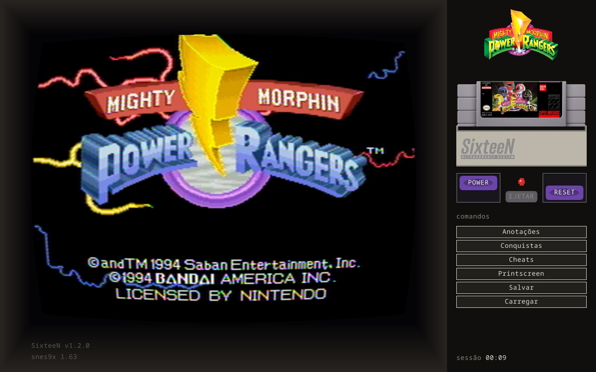
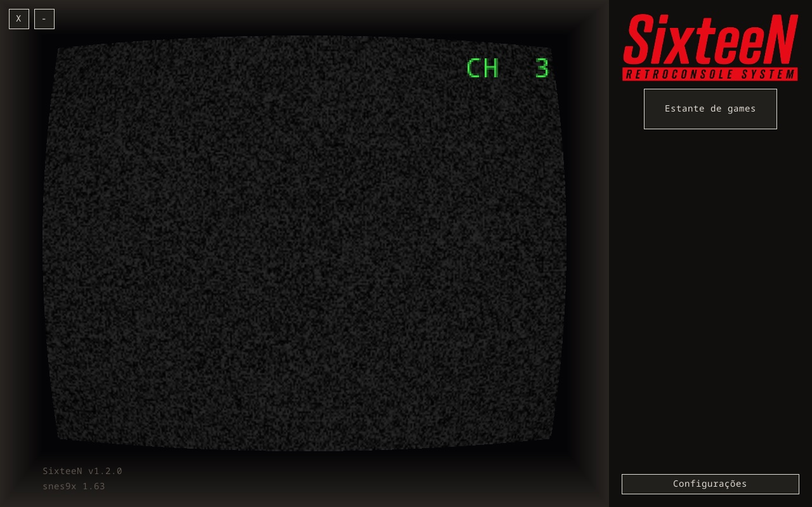
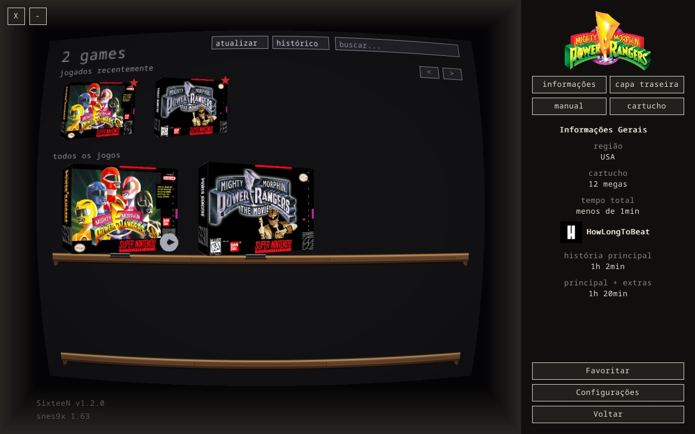
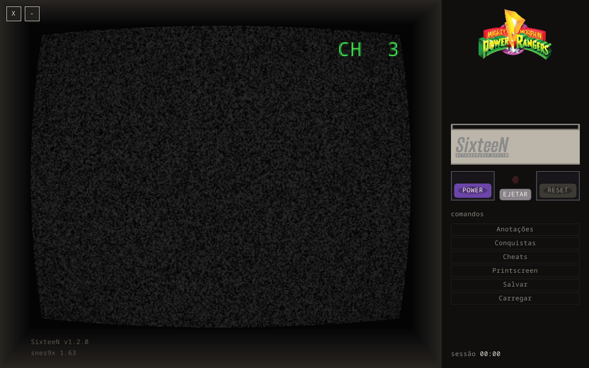
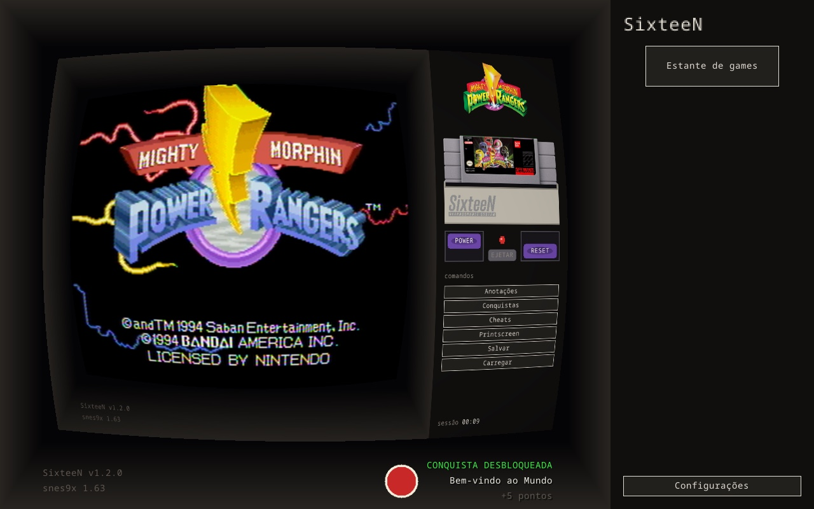
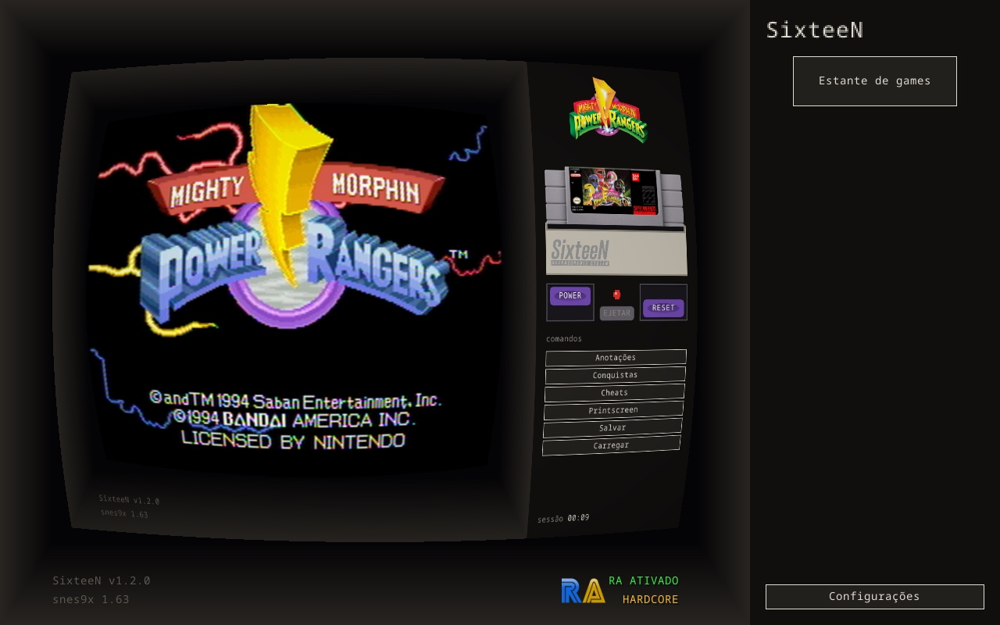

manual do proprietário
Um console inteiro na sua TV — gabinete, tubo CRT e cartucho de verdade — em vez de só uma janela com o jogo. E não é um emulador novo: quem emula é o snes9x; o SixteeN é o console ao redor dele.
v1.2.0 SDL3 embutido · macOS / Windows / Linux / Steam Deck

O console
A maioria dos emuladores te dá uma janela. O SixteeN te dá o aparelho: a tela acorda em estática no Canal 3, você escolhe o jogo na estante, o cartucho desce e encaixa no slot com um clique — e o console só liga quando você aperta o Power, igual ao hardware.
O tubo usa o filtro NTSC RF do blargg com scanlines, curvatura e vinheta; a imagem abre em tela cheia na resolução nativa do seu monitor — laptop, TV ou Steam Deck. Tudo se opera com mouse e gamepad; a única exceção é escrever uma anotação, que precisa de teclado por natureza.
Importante: o SixteeN não é um emulador novo. Quem roda os jogos é o snes9x (port libretro), baixado e atualizado pelo próprio app — o SixteeN é o frontend de console ao redor: vídeo, áudio, estante, cartucho, manual e conquistas.
E é portátil de verdade, zero nuvem: sem banco de dados e sem raspagem online — tudo em pastas ao lado do app, que você carrega onde quiser.
Como ligar

-
passo 1
Baixe o app
Última release: DMG para macOS, zip para Windows e AppImage para Linux — todos com a SDL3 embutida, sem instalar dependência nenhuma.
-
passo 2
Coloque seus jogos
Arraste suas ROMs
.sfc/.smcpara a pastaroms/ao lado do app. Um botão na estante as renomeia para o padrão canônico No-Intro se você tiver o DAT. -
passo 3
Instale o núcleo
Na tela inicial, o botão “Baixar núcleo snes9x” traz o núcleo do buildbot da libretro e o mantém atualizado — a seta verde só acende quando existe commit novo de verdade.
| macOS | Apple silicon (arm64), macOS 12+ |
|---|---|
| Windows | x86_64, Windows 10+ |
| Linux | x86_64 — AppImage autônomo; Steam Deck testado |
| controles | mouse + gamepad; teclado só para anotações |
onde achar as artes dos jogos
O app não distribui capas, logos nem manuais: elas vêm de imagens
suas, nas pastas assets/cover,
assets/backcover, assets/logo,
assets/cartridge e assets/manual,
com o mesmo nome do arquivo da ROM. Sugestões de
acervos feitos pela comunidade (alguns pedem cadastro gratuito; o
material pertence aos autores de cada pacote):
| cartucho | 2D Carts — arcdragon · Carts — Abeezy (EmuMovies) · Carts — Abeezy (LaunchBox) |
|---|---|
| logos | SNES Logos Pack (EmuMovies) |
| capas | Complete Accurate USA Retail Box Art (EmuMovies) · Super Nintendo 3D Box (LaunchBox) |
| contracapa | SNES Boxes Back Pack (EmuMovies) |
| manuais | SNES Game Manuals Pack (EmuMovies) |
A estante de jogos

A estante é a prateleira da sala: busca instantânea, faixa de favoritos, “jogados recentemente” e histórico — com tempo de jogo por jogo, contando só com o console ligado, e por sessão.
No painel do jogo, abas de informação, capa traseira e manual em PDF dentro da TV, com páginas viradas no próprio painel. Cheats curados em checklist e 15 slots de captura de tela nomeáveis moram no livro de anotações, que abre com o console pausado.
O cartucho

Escolher um jogo insere o cartucho de verdade: animação de descida, clique de encaixe, clique de destravamento — e ejetar só com o console desligado, como no original. Sem cartucho no slot, a TV insiste em Canal 3.
Conquistas na TV


Integração completa com o RetroAchievements: login nas configurações, identificação do jogo pelo hash da ROM e avaliação das condições em tempo real contra a RAM do núcleo — hardcore ou softcore, badge fixo no queixo da TV, progresso “X de Y (Z%)” no painel da estante, lista dentro da TV e medalha de quem zerou: dourada para 100%, prateada para quem chegou ao fim.
Especificações
| emulação | snes9x (port libretro) — baixado e atualizado pelo app; o SixteeN é um frontend de console ao redor, não um emulador novo |
|---|---|
| vídeo | filtro NTSC RF do blargg, scanlines, tela cheia na resolução nativa do monitor |
| áudio | 48 kHz estéreo, com hiss de tubo opcional |
| código | Rust sobre SDL3, em quatro camadas de crates: apresentação, domínio, emulação, plataforma |
| pacotes | DMG / zip / AppImage com SDL3 embutida, gerados a cada release |
| dados | 100% locais — sem banco de dados, sem nuvem, sem telemetria |
Avisos & licenças
aviso importante
As telas vêm do console do autor em uso real — mas nenhuma ROM ou núcleo é distribuído com o app: suas ROMs são suas, e o núcleo snes9x é baixado direto do buildbot oficial da libretro.
sobre as telas
Todas as imagens são prints de verdade do app, capturados do console em funcionamento com a biblioteca real do autor — os dois Mighty Morphin Power Rangers no tubo e na estante. As capas e os jogos comerciais pertencem aos seus donos e nenhuma ROM é distribuída; o texto da notificação de conquista é ilustrativo (o badge e o aviso na TV são os do app). Para começar do zero sem ROM própria, o homebrew open source Platformer Example (de NovaSquirrel) vem como pacote de exemplo pronto para instalar pelo modo dev (código Konami na tela inicial).
licenças
SixteeN é um projeto pessoal, sem fins comerciais, sob licença MIT. O snes9x tem licença própria não comercial — é por isso que o núcleo nunca vem no pacote. Terceiros listados em THIRD-PARTY-NOTICES.md. RetroAchievements é um serviço de terceiros e precisa de conta própria.